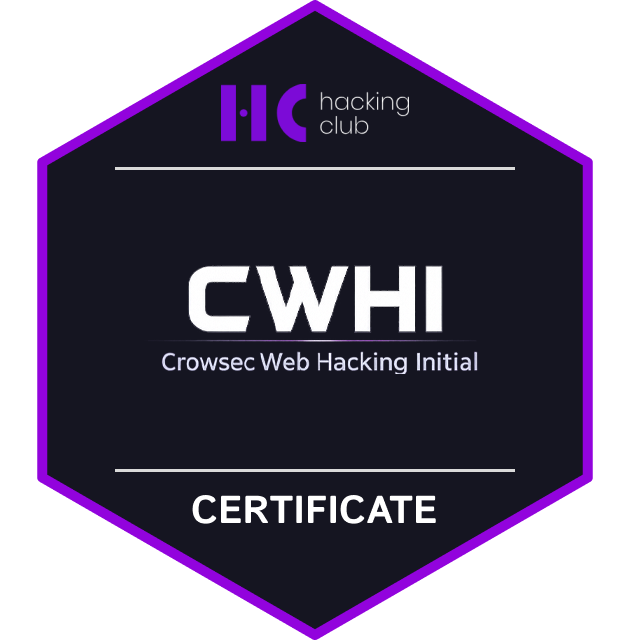
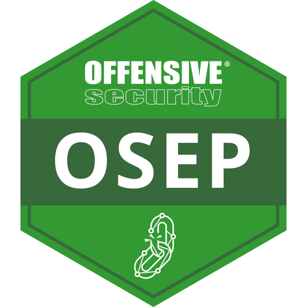
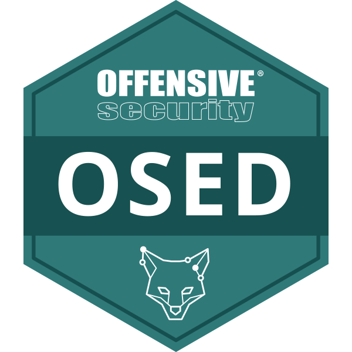

<script>alert(' Sobre Mim ')</script>
~/whoami
História
Atuo com segurança ofensiva desde os 12 anos. O que começou sendo uma "brincadeira" por curiosidade virou a forma como eu ganho a vida.
Hoje faço testes de intrusão, análise de vulnerabilidades e modelagem de ameaças contra aplicações web, mobile, APIs e infraestrutura em ambientes onde falha não é tolerada.
Antes de atacar sistemas, eu mantinha eles de pé. Passei por suporte, administração de sistemas e infraestrutura em ambientes hospitalares críticos. Essa bagagem me deu uma leitura que lab nenhum ensina, que é como sistemas complexos realmente quebram quando a pressão aperta. Formei em Ciência da Computação, estou cursando Pós-Graduação em Operações Red Team na FIAP e carrego certificações como CRTA, eJPT, SYCP e SC-900.
Operações Red Team
Pentest me trouxe até aqui, mas eu queria ir além de achar vulnerabilidade e escrever relatório. Queria simular o ataque inteiro, do zero até o objetivo final, pensando e agindo como um adversário real faria contra a organização. Foi assim que mergulhei em operações red team.
Na prática isso significa construir campanhas de phishing e spear phishing com pretextos sob medida, aplicar engenharia social por telefone, e-mail e presencialmente, fabricar deepfakes de áudio e vídeo pra testar se a empresa identifica fraude de identidade, e simular fraudes fiscais e financeiras pra estressar os controles internos. Faço reconhecimento em fontes abertas (OSINT), monitoro deep e dark web atrás de vazamentos, credenciais expostas e menções à organização em fóruns underground, e modelo cenários de ataque completos com persistência, movimentação lateral e exfiltração.
Fora do expediente, participo de bug bounty e jogo CTFs em plataformas como HackTheBox e HackingClub pra não enferrujar.
~/today
Hoje... Eu atuo como Offensive Cybersecurity Analyst na MV, a maior Healthtech da América Latina, executando pentests em aplicações bancárias e principalmente de saúde com base em OWASP WSTG, PTES e OSSTMM. Meu trabalho é achar a falha antes do atacante real, traduzir essa falha/problema para a borda além de transformar esse achado técnico em decisão de negócio para proteger sistemas que impactam milhões de vidas.
Habilidades Técnicas
Web App Pentest
Testes focados em OWASP Top 10: XSS, SQLi, IDOR, SSRF, LFI/RFI e SSTI, utilizando Burp Suite em ambientes reais e labs.
Active Directory
BloodHound, Kerberoasting, Pass-the-Hash, abuso de ACLs e Impacket em ambientes corporativos Windows.
Red Teaming
Simulação de adversários com C2, OPSEC, mapeamento por MITRE ATT&CK e exercícios de Purple Team.
Network Pentest
Reconhecimento com Nmap, exploração com Metasploit, pivoting e movimentação lateral em redes corporativas.
Malware Analysis
Análise estática e dinâmica, execução em sandbox, engenharia reversa básica e extração de IOCs.
Cloud Offensive
Ataques em Azure AD e M365, bypass de Conditional Access e manipulação de tokens OAuth.
Scripting & Tooling
Desenvolvimento de ferramentas e automações em Python, PowerShell e Bash, incluindo técnicas Living off the Land.
OSINT & Recon
Mapeamento de superfície de ataque, footprinting e reconhecimento passivo e ativo com Shodan e outras fontes abertas.
Análise Forense
Coleta e preservação de evidências digitais com FTK Imager e Autopsy.
Projetos Destacados
JWT Wizard
CLI em Python para decodificar, editar e reassinar JWTs. Foco em labs e CTFs.
Azure Sentinel Mini-Pack
Conjunto de 10 regras KQL + 4 playbooks de resposta para detecção rápida no Microsoft Sentinel.
JWT Playground
Web app para criar, inspecionar e manipular tokens no navegador. Uso educacional.
AD Permission Auditor
Script em PowerShell que varre shares SMB, coleta ACLs e gera CSV + relatório de riscos de acesso.
PE Analyzer
Análise estática de executáveis PE. Headers, seções, imports e alertas de anomalias.
Honey5kr1pt
Honeypot para SMB. Isca com SACL e correlação 4663 ↔ 4624 exibindo usuário e IP.
Veja mais detalhes clicando nos cards ou
Ver GitHubExperiências
Offensive Cybersecurity Engineer (Red Team) | MV
Nov/2025 | AtualFoco em operações de segurança ofensiva e simulação de adversários na maior empresa de software de gestão de saúde da América Latina. Realizo testes de intrusão em ambientes complexos, análise de vulnerabilidades e desenvolvimento de estratégias de Red Teaming. Além das operações técnicas, contribuo com uma visão ofensiva no apoio às decisões de arquitetura e revisão de segurança do produto — garantindo que os sistemas críticos de saúde sejam desafiados como um adversário real antes de chegarem à produção. Colaboro com o time de defesa para elevar a maturidade de detecção e resposta através de exercícios de Purple Teaming.
Cibersegurança & Infraestrutura | Hospital Santa Marcelina
Jun/2024 | Out/2025Nesta função, aplico uma mentalidade ofensiva para fortalecer a segurança de um ambiente crítico 24x7. Utilizo meu profundo conhecimento em infraestrutura para identificar e explorar vetores de ataque em Active Directory, como falhas em ACLs e configurações de privilégio. Minha experiência prática em firewalls (FortiGate) me permite simular bypass de políticas, testar a segurança de VPNs e webfilters. Utilizo PowerShell não apenas para auditorias, mas principalmente para desenvolver scripts de enumeração e automação de tarefas ofensivas (Living off the Land). Conduzo testes contra o ambiente Microsoft 365, avaliando a robustez de MFA e defesas anti-phishing. Meu foco é traduzir vulnerabilidades técnicas em riscos operacionais tangíveis, alinhando os testes de penetração com a realidade de um ambiente regulado pela LGPD.
Analista de Sistemas Jr. | Hospital Santa Marcelina
Jul/2023 | Jun/2024Esta posição foi fundamental para construir minha base técnica em sistemas e bancos de dados sob a ótica de um atacante. A administração diária de Oracle e SQL me deu uma profunda compreensão para identificar e explorar vulnerabilidades complexas de SQL Injection e configurações inseguras. A responsabilidade por integrações via API REST me permitiu analisar a superfície de ataque de aplicações web, focando em falhas de autenticação, autorização e lógica de negócio. A criação de procedures e relatórios em SQL aprimorou minha habilidade de construir payloads avançados para exfiltração de dados durante testes de penetração. Essa experiência prática no "backend" foi essencial para minha especialização em segurança de aplicações (AppSec).
Helpdesk | Hospital Santa Marcelina
Jul/2022 | Jul/2023No 1º nível, atendia mais de 90 chamados por dia, por ligação e e-mail, garantindo que as pessoas conseguissem trabalhar, realizava o provisionamento de contas no AD e Microsoft 365 com MFA, padronização de imagens, atualização de estações e correção de problemas de acesso, e-mail e rede. Organizei filas por impacto, cumpri SLA, escalei quando necessário e registrei lições aprendidas que são usadas até hoje como documentação pela equipe de suporte. Treinei usuários em boas práticas de senha e phishing e mantive comunicação simples e direta. Essa base me deu disciplina de operação, cuidado com dados e foco em resolver rápido sem abrir mão de segurança.
Certificações
CRTA — Certified Red Team Analyst
Exame 100% prático de Red Team em ambiente Active Directory corporativo simulando um adversário real do início ao fim. Percorreu toda a kill chain: reconhecimento, acesso inicial via phishing e serviços expostos, escalada de privilégios locais e de domínio, movimentação lateral, abuso de relações de confiança e delegação Kerberos, persistência e exfiltração de dados, com uso de C2 e disciplina de OPSEC ao longo de toda a operação. Todas as flags capturadas em menos de 2 horas de uma janela de 6h.
Ver CredencialINE eJPT v2
Prova 100% prática de pentest com foco em enumeração, exploração e pivoting. Abrangeu 8 máquinas Linux e Windows, mapeamento de rede e serviços, correção de exploits, pós-exploração e relatório objetivo. Ferramentas: Nmap, Burp Suite, Metasploit, Hydra, análise de protocolos e tunelamento.
Ver CredencialMicrosoft SC-900
Fev/2025 920 / 1000 · 20m/45minFundamentos de Segurança, Conformidade e Identidade na nuvem Microsoft. Cobriu Zero Trust, MFA, gestão de identidades no Entra ID, princípios de proteção com Defender, monitoramento no Sentinel e recursos de conformidade. Base sólida para aplicar mínimo privilégio, segmentar acessos e criar alertas úteis sem complicar a operação.
Ver CredencialPentest do Zero ao Profissional v2023
Mai/2023Formação prática da Solyd focada em simulações controladas de intrusão. Montei laboratório, fiz reconhecimento, varredura e análise de serviços, exploração apenas em ambientes de teste e pós-exploração com relatório reproduzível. Ferramentas usadas: Nmap, Burp Suite, Metasploit, Python e PowerShell. Objetivo direto: entender técnicas de ataque para fortalecer detecção, hardening e resposta.
Ver CredencialBadges


Próximas Certificações
-

CWHI HackingClub70% -
 eWPTXv2
eLearnSecurity
60%
eWPTXv2
eLearnSecurity
60% -
 CWES
HackTheBox
30%
CWES
HackTheBox
30% -
 CPTS
HackTheBox
25%
CPTS
HackTheBox
25% -
 OSCP
Offensive Security
4%
OSCP
Offensive Security
4% -
 OSWE
Offensive Security
0%
OSWE
Offensive Security
0% -

OSEP Offensive Security0% -

OSED Offensive Security0% -
 OSEE
Offensive Security
0%
OSEE
Offensive Security
0%
Contato
Conecte-se comigo: